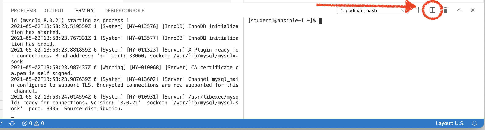

Containerized Databases
|
This section is not yet completed |
Given that containers have the ability to mount other (persistent) filesystems, database servers also become candidates for running in containers. (Non ephemeral) containerized databases use volume mounts for their data directory where they write and persist the contents of the database to the filesystem.
-
Start your database by running the following command:
podman run \ --rm (1) --name mysql_database (2) -e MYSQL_USER=user -e MYSQL_PASSWORD=pass -e MYSQL_DATABASE=db (3) -p 3306:3306 quay.io/bfarr/mysql-801 This means the container should be removed once stopped 2 Instead of referring to the container by its Container IDwe can provide a name by which we’d like to address the container3 These are environment variables that we would like to be made available within the container. In this instance, these are all environment variables that MySQL uses to set itself up -
The terminal should be taken over with log output from the container. This is because we did not run the container in "daemon mode" and instead it is running in the foreground of our terminal.
-
Open a second terminal to the side by hitting the terminal split button
Figure 1. Terminal split button -
Observe the running container image by running the
podman pscommandpodman psCONTAINER ID IMAGE COMMAND CREATED STATUS PORTS NAMES e658d0e1d5c1 quay.io/bfarr/mysql-80:latest run-mysqld --defa... 13 minutes ago Up 13 minutes ago 0.0.0.0:3306->3306/tcp mysql_database (1)1 Notice that this is the name we assigned the container above
Create Database
-
Let’s create our database providing the output of a .sql file to a mysql cli that is running in the container. To do this we will use the
podman execcommandcat /home/%USER%/container-workshop/sql/example_database.sql | \(1) podman exec \(2) -i \(3) mysql_database \(4) mysql -u user -p'pass' -D db (5)1 output the contents of the .sql file that creates the example database to STDIN 2 Run a command in a (running) container 3 interactive: makes STDIN available to whatever command we are exec’ing 4 The name (or Container ID) of the running container where we want to run the command5 The command that we mean to run
Container Concepts and Security
We’ll go deeper into some container concepts in this exercise using a MySQL database running in a container
Containers and Persistence
Containers are meant to be run as "immutable" instances meaning that they are not mean to persist changes in state. So if that’s true, why would anyone attempt to run a database in a container. Through out this section we will aim to answer this whilst demonstrating some additional container concepts.
Start Database Container
-
Start your database by running the following command:
podman run \ --rm (1) --name mysql_database (2) -e MYSQL_USER=user -e MYSQL_PASSWORD=pass -e MYSQL_DATABASE=db (3) -p 3306:3306 quay.io/bfarr/mysql-801 This means the container should be removed once stopped 2 Instead of referring to the container by its Container IDwe can provide a name by which we’d like to address the container3 These are environment variables that we would like to be made available within the container. In this instance, these are all environment variables that MySQL uses to set itself up -
The terminal should be taken over with log output from the container. This is because we did not run the container in "daemon mode" and instead it is running in the foreground of our terminal.
-
Open a second terminal to the side by hitting the terminal split button
Figure 2. Terminal split button -
Observe the running container image by running the
podman pscommandpodman psCONTAINER ID IMAGE COMMAND CREATED STATUS PORTS NAMES e658d0e1d5c1 quay.io/bfarr/mysql-80:latest run-mysqld --defa... 13 minutes ago Up 13 minutes ago 0.0.0.0:3306->3306/tcp mysql_database (1)1 Notice that this is the name we assigned the container above
Create Database
-
Let’s create our database providing the output of a .sql file to a mysql cli that is running in the container. To do this we will use the
podman execcommandcat /home/%USER%/container-workshop/sql/example_database.sql | \(1) podman exec \(2) -i \(3) mysql_database \(4) mysql -u user -p'pass' -D db (5)1 output the contents of the .sql file that creates the example database to STDIN 2 Run a command in a (running) container 3 interactive: makes STDIN available to whatever command we are exec’ing 4 The name (or Container ID) of the running container where we want to run the command5 The command that we mean to run